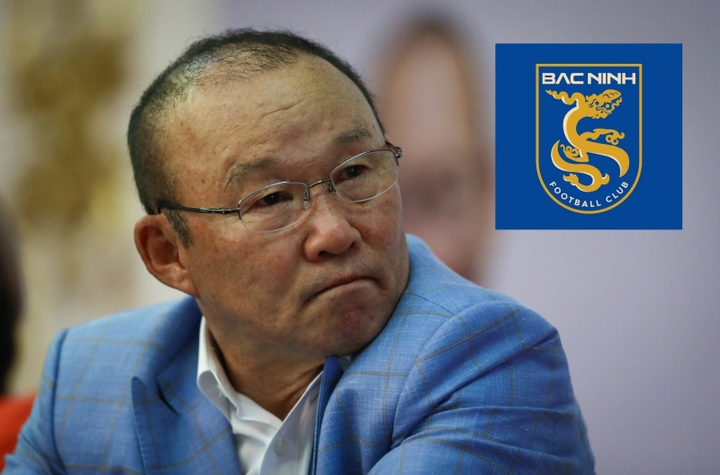
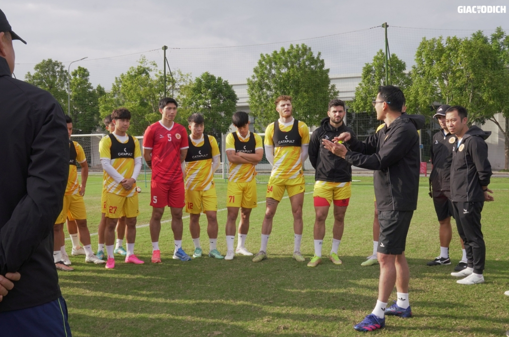
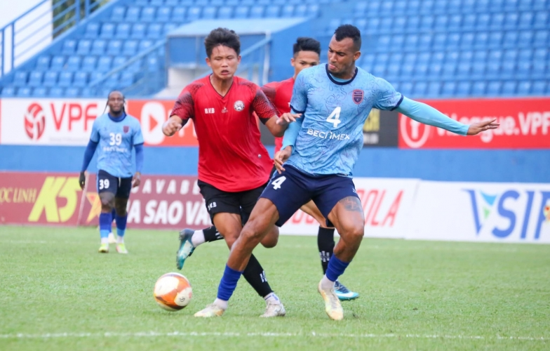
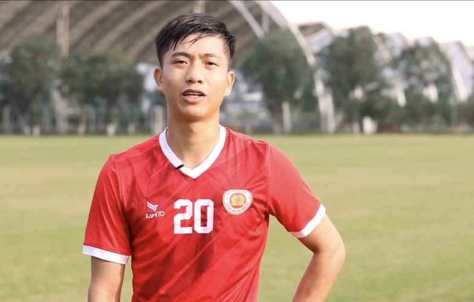
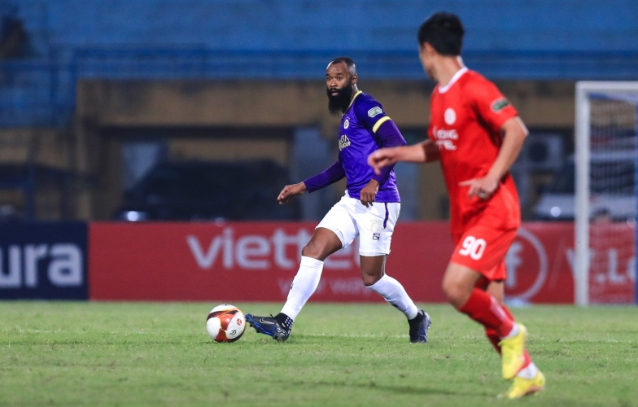
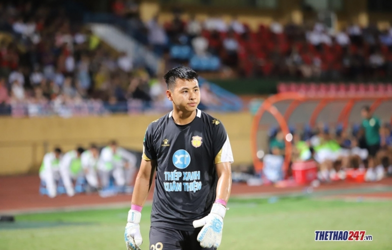

Tin tức thể thao

Đội bóng HLV Park làm cố vấn đá trận đầu tiên
Bắc Ninh FC - đội bóng được cho là có HLV Park Hang Seo làm cố vấn sẽ chính thức bước vào thi đấu.

CLB Công an Hà Nội (CAHN) nhận thông báo về VAR từ LĐBĐ Việt Nam (VFF) trước ngày V-League 2023/24 trở lại.
CAHN nhận thông báo từ LĐBĐ Việt Nam
CLB Công an Hà Nội (CAHN) nhận thông báo về VAR từ LĐBĐ Việt Nam (VFF) trước ngày V-League 2023/24 trở lại.

CLB Việt Nam thua trận sau vụ 5 cầu thủ bán độ
CLB Bà Rịa Vũng Tàu nhận thất bại ở trận giao hữu mới đây sau vụ 5 cầu thủ bị khởi tố vì bán độ, đánh bạc.

Phan Văn Đức trực tiếp báo tin vui
Tiền vệ Phan Văn Đức báo tin cực vui tới người hâm mộ và ĐT Việt Nam với tình hình sức khỏe.

Hà Nội FC bất ngờ chia tay công thần Brazil
Hà Nội FC đã nói lời chia tay với một ngoại binh có sự đóng góp đáng kể cho đội bóng trong thời gian vừa qua.

'Kẻ gieo sầu' cho CAHN tái xuất
Thủ thành Trần Đức Dũng của CLB Nam Định đã quay trở lại tập luyện sau khi phẫu thuật dây chằng.